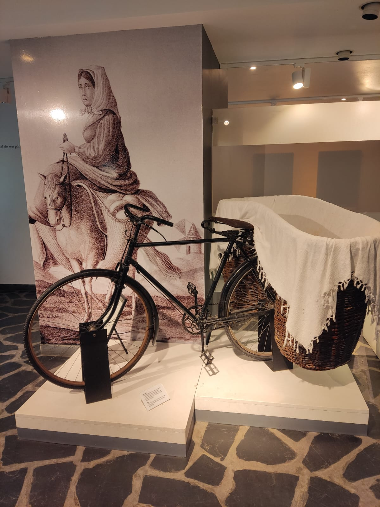

Feito com Amor, assado na perfeição!
Nossa história
Receitas de família
Faça sua encomenda!
"Nossa história é amassada entre dois continentes e unida pelo aroma que sai do forno."
Tudo o que somos hoje começou com as mãos enfarinhadas da nossa avó. Foi com ela que aprendemos
que o pão não é apenas uma mistura de ingredientes, mas um ritual de paciência e amor.
Nascemos da união entre Portugal e Brasil, e nossa cozinha reflete essa mistura: o respeito pelas raízes
lusitanas
e a alegria dos encontros brasileiros. Para nós, o domingo nunca foi dia
de descanso para as mãos, mas sim o dia de reunir a família em volta da mesa, transformar a cozinha
em um campo de farinha e perpetuar as receitas que atravessaram o oceano.
Seguimos a tradição à risca. Cada dobra na massa e cada tempo de descanso respeita o que nos foi
ensinado
gerações atrás. Não fazemos apenas pão caseiro; preservamos uma herança familiar para que o conforto que
sentíamos
na casa da nossa avó chegue agora à sua mesa.

Não é apenas sobre comida; é sobre tempo de qualidade. Em um mundo cada vez mais acelerado, fazer o próprio
pão é um ato de amor e carinho. É entender o ritmo do fermento, sentir a textura da massa e, finalmente,
poder sentir
o aroma magnífico saindo do forno. Cá estamos prontos para lhe ensinar e dar dicas valiosas de como ter pães
fresquinhos e
saborosos feitos por si.
E, se preferir sentir esse aroma agora mesmo na sua mesa, também preparamos nossos pães artesanais para
venda direta aqui pelo site.
Escolha o seu favorito e receba um pedaço da nossa tradição em sua casa.
Quer provar nossa fornada de hoje?
Encomendar meu pãoTire dúvidas, compartilhe sua história ou apenas entre em contacto.